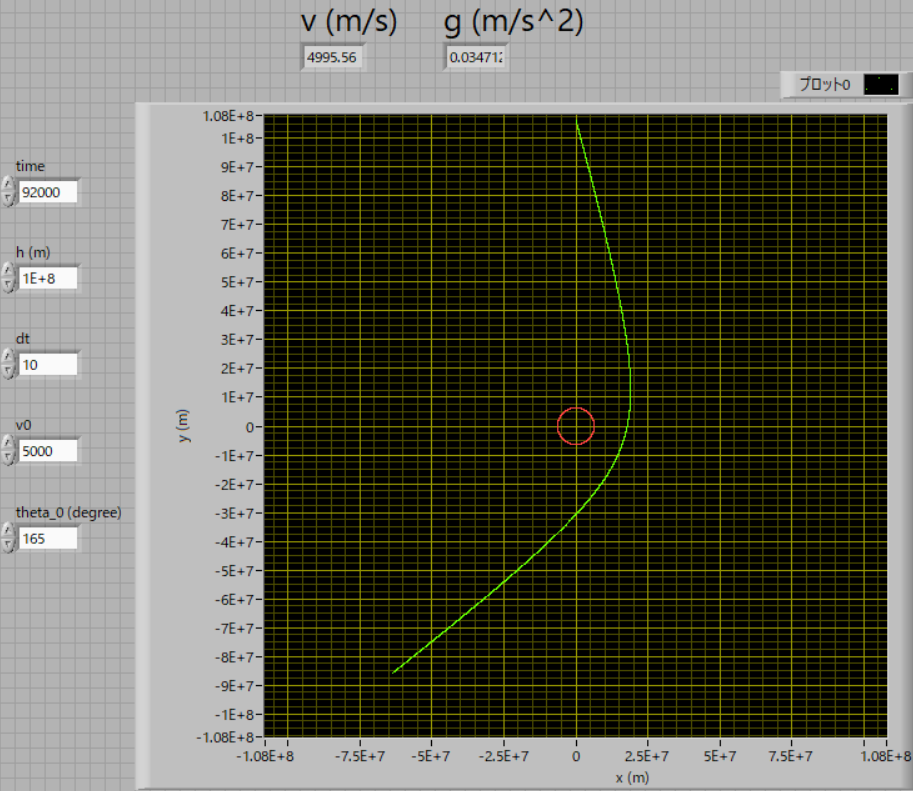
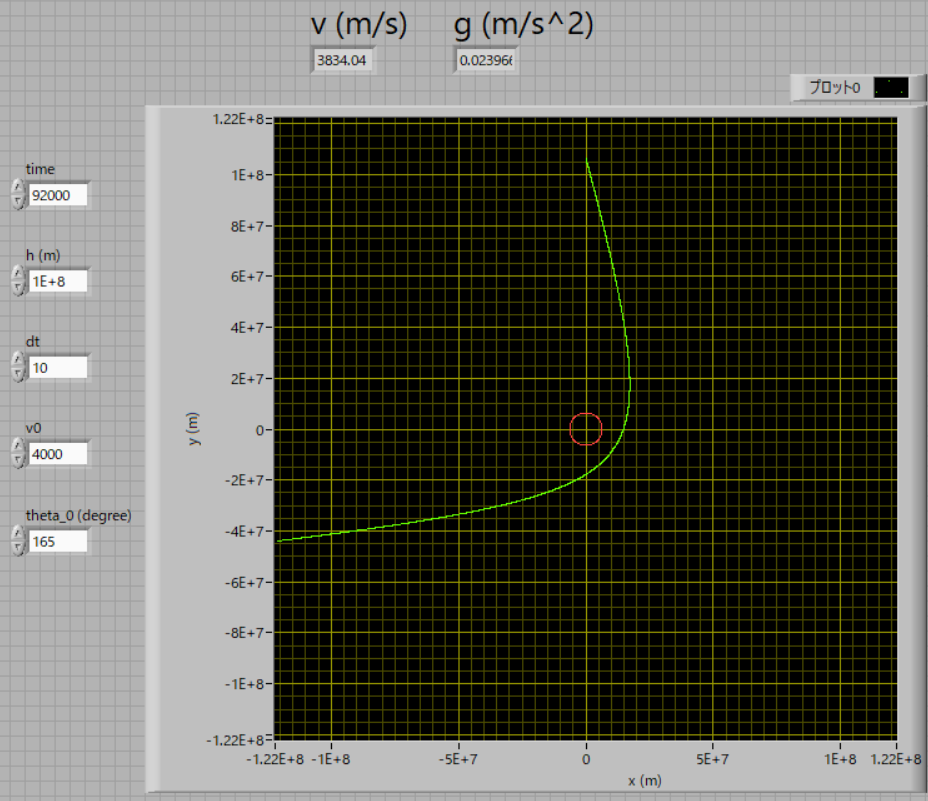
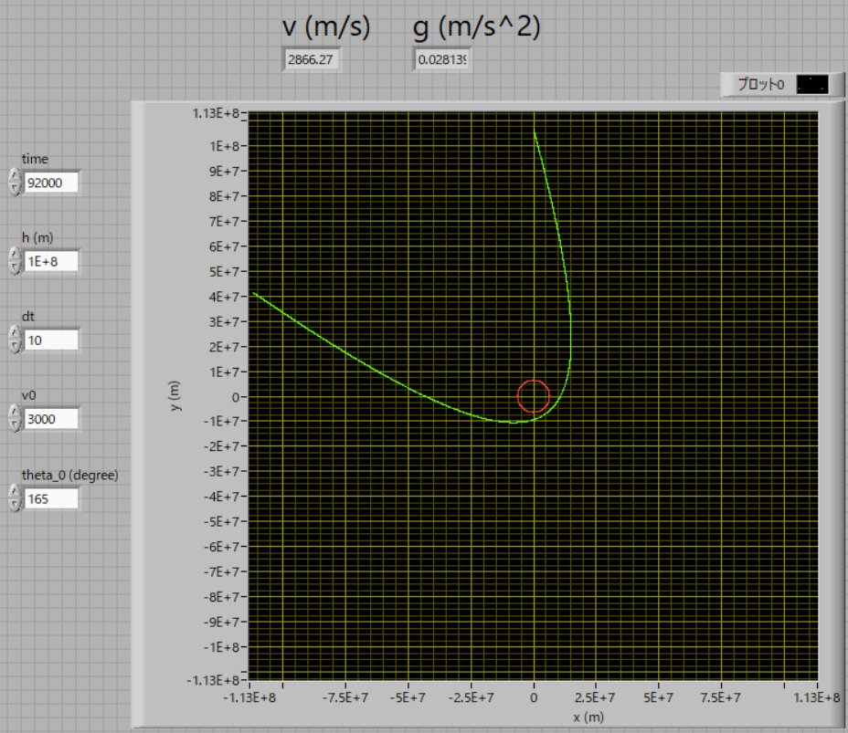
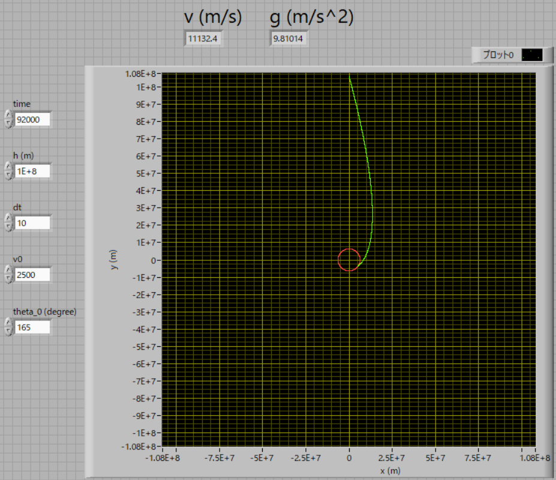

弾道計算 について-04-スウィングバイ
スウィングバイ，という航法があるようです．
エネルギーを使わずに，軌道を変える方法のようです．
実際に今回のプログラムで計算してみましょう．
プログラムは，Labview2009，です．だいぶ古いバージョンですが未だに現役です．
条件は，
高度：10,000km
速度：5.0km/s
角度：165度
で計算してみた結果が下の図です．
このように，天体の重力により，軌道方向が変化している様子がわかります．．

ちなみに，速度を4.0km/sに落とすと，だいぶ角度の変化が見られます．

ちなみに，速度を3.0km/sに落とすと，さらに角度の変化が見られます

ちなみに，速度を2.75km/sまで落とすと，かなり地表に近くを通り過ぎ，角度の変化が見られます
速度を2.5km/sまで落とすと，地表に激突します．

速度を2.0km/sまで落とすと，もっと早く地表に激突します．
なんとなく，スウィングバイ，を再現できましたが，定量的にあっているかどうかは．．．．よくわかりません．